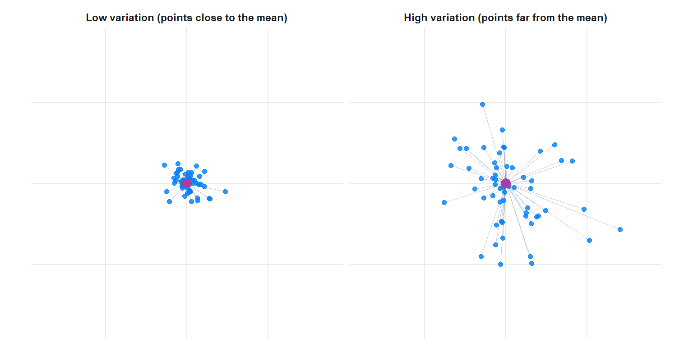
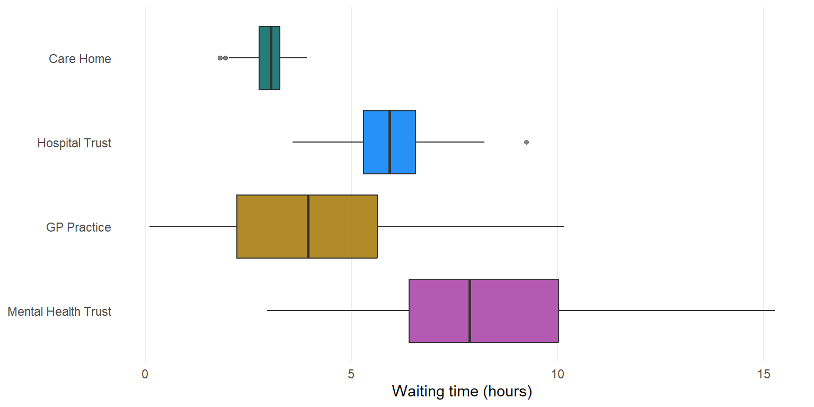
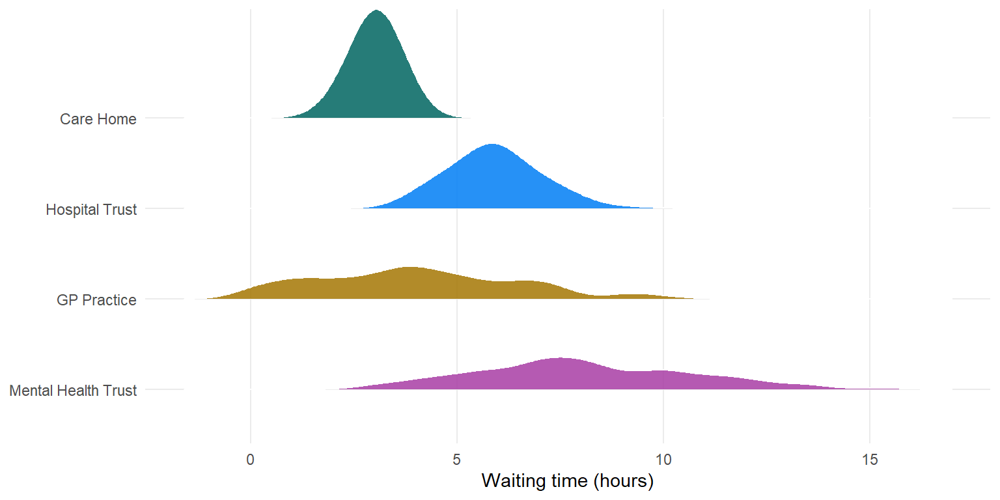

![Three bar-chart panels side by side, each counting providers across three categories – care home, GP practice, hospital. Left panel, Concentrated: one bar of ten care homes, the other two categories empty; Gini index 0 and Shannon entropy 0. Middle panel, the region's mix: care home seven, GP practice two, hospital one; Gini index 0.46, Shannon entropy 1.16 bits. Right panel, Even mix: care home four, GP practice three, hospital three; Gini index 0.66, Shannon entropy 1.57 bits. The bar heights grow steadily more equal from left to right as both indices rise.](04-variation-uncertainty_files/figure-html/fig-diversity-extremes-1.png)
4 Measuring Variation
4.1 How Spread Out Is Your Data?
The previous chapter found the middle; this one asks how far the data spreads around it. The two questions are inseparable, because the middle on its own can hide everything that matters.
Two providers might both average 10 incidents a month. One records 9, 10, 11, 10, 10 – steady, predictable. The other records 0, 2, 18, 20, 10 – the same mean, a completely different operation. Location alone cannot tell them apart; spread can. And spread is what makes a single value unusual: a provider five incidents above the mean is barely worth a glance where the typical swing is ±10, but a klaxon where it is ±2.
Spread, like location, climbs the ladder of measurement. Each rung unlocks a richer way to describe it: at the bottom you can say only how diverse the categories are; add ordering and you can measure a range; add arithmetic and you can measure the typical distance from the mean. This chapter climbs those rungs, working a single scenario as it goes – one region’s providers, looked at three ways: their type (nominal), their rating (ordinal), and their monthly incident counts (quantitative).
4.2 Spread Without Order: Diversity
Even where you cannot order the values or do arithmetic on them, data still varies – it can pile into one category or scatter across many. That is diversity (or heterogeneity), and it is the only kind of spread nominal data admits.
The plainest measure is the proportion in the largest category: if 90% of providers are one type, the mix is homogeneous; if no category dominates, it is diverse. Two summaries make this precise. Writing \(p_i\) for the proportion in category \(i\) and \(k\) for the number of categories (and \(\sum\) for “add up over all the categories”):
- Gini’s heterogeneity index \(\displaystyle D = 1 - \sum_{i=1}^{k} p_i^{\,2}\) – the chance that two cases picked at random fall in different categories. \(D = 0\) when everything is in one category; it rises towards \((k-1)/k\) as the categories even out. (The same quantity travels under several names: the Gini–Simpson index, or Simpson’s diversity index. They are one formula.)
- Shannon’s entropy \(\displaystyle H = -\sum_{i=1}^{k} p_i \log_2 p_i\) – a measure from information theory, in bits. \(H = 0\) for one category, rising to \(\log_2 k\) for a perfectly even split. It is more sensitive to rare categories than Gini’s index.
Take the region’s ten providers: seven care homes, two GP practices, one hospital. Gini’s index works out at \(D = 1 - (0.7^2 + 0.2^2 + 0.1^2) = 1 - 0.54 = 0.46\), Shannon’s entropy at \(H = 1.16\) bits.
Two numbers are hard to feel in the abstract, so it helps to see the scale they sit on. The panels below hold the same ten providers but vary the mix – all in one type, the region’s actual spread, and as even a split as three types allow. Diversity is, quite literally, how level the bars are: one tall bar means a single type dominates and both indices collapse to zero; bars of equal height push both indices to their maximum.
Only the first of those two numbers speaks for itself. Gini’s index is a probability: \(D = 0.46\) means that if you pick two of these providers at random, there is a 46% chance they are different types – a statement anyone can act on. Shannon’s \(1.16\) bits, by contrast, tells you almost nothing on its own. Bits of what, measured against what? The figure becomes interpretable only beside a yardstick, and the natural yardstick is the most diverse this mix could be: with three categories, the perfectly even split, worth \(\log_2 3 \approx 1.58\) bits. Now \(1.16 / 1.58 \approx 0.73\) says something real – this region is about three-quarters of the way to a perfectly even spread of provider types.
That same yardstick sharpens even the readable Gini index. Is \(0.46\) “a lot” of diversity? Set against its own maximum of \((k-1)/k = 0.67\) for three categories, it sits about two-thirds of the way to maximal – aligned with the verdict the entropy gave, as it should be. The lesson is general: a diversity index read in isolation is hard to judge, so always pin it to something. Report it either normalised to its 0–1 maximum (the dedicated Overthinking box in this chapter gives the recipe for both indices) or as a comparison – this region against another, or this month against last.
4.3 Spread You Can Order: Range and the IQR
Add an ordering and a new idea becomes available: you can mark off where the data starts and ends. Two measures matter here, and both carry a subtlety worth stating plainly – the difference between naming an interval and measuring its length.
Start with the range. The word does double duty. It can mean the interval the data covers – “ratings run from Requires Improvement to Outstanding”, “waits run from 1 to 19 hours” – which needs only an ordering: name the smallest and largest values and you are done. Or it can mean the length of that interval, the single number \(\text{max} - \text{min}\), which is the form most textbooks call “the range”. That subtraction needs real numeric gaps, so it sits on the top rung – you cannot subtract Requires Improvement from Outstanding. Either way the range is pinned entirely to the two extremes, so a single freak value sets it.
Because it rides on those two extremes, the range means quite different things depending on whether your data is a whole population or a sample drawn from one – the distinction the previous chapter drew between describing the data in hand and estimating from a larger group. For a whole population the range is a fixed fact: by definition every value already lies inside it, so it states the outer limits and nothing more. That is occasionally what you want – a bounds check, “no wait exceeded 19 hours” – but it says nothing about how the bulk of providers behave, and adding more of the same population cannot change it. For a sample the range is no longer fixed but random, and that cuts both ways. On the one hand it now carries genuine information about the particular cases you drew. On the other, every extra case is another chance to catch a new extreme, so the observed range tends to grow with the sample size and, on average, falls short of the population’s true span. “Waits ran from 1 to 19 hours” can therefore say almost as much about how many providers you happened to sample as about the underlying variation. Either way the moral is the same: lean on the interquartile range, which ignores the extremes entirely.
The same interval-versus-length distinction runs through the far steadier interquartile range:
\[\text{IQR} = Q_3 - Q_1\]
from the 25th percentile (\(Q_1\)) to the 75th (\(Q_3\)). Finding those quartiles is a matter of position: sort the data and read off the values a quarter and three-quarters of the way through, so the pair \((Q_1, Q_3)\) marks out the central 50% of the distribution with only an ordering required. Turning that pair into the single number \(Q_3 - Q_1\) is again a subtraction, so the IQR as a width needs quantitative data, just as the range does.
This is exactly how far the region’s ratings reach. The ten providers are rated one Requires Improvement, six Good, three Outstanding; the median rating is Good, and the central 50% are all Good – so as an interval the IQR collapses onto a single grade. You can say that honestly without computing any width: the ratings barely spread. What you cannot do on ordinal data is put a number on the spread – no IQR width, no standard deviation – because the gaps between grades are undefined.
The IQR’s real virtue, which comes into its own once the data is numeric, is robustness: because it looks only at the central 50%, no extreme value can inflate it. Hold that thought – it is about to matter.
4.4 Spread You Can Compute: Variance, Standard Deviation, and CV
At the top rung, where the gaps between values are real numbers, you can measure the typical distance from the mean. Take each value’s deviation from the mean, square it (so that values above and below do not cancel), average the squares, and you have the variance; its square root, back in the original units, is the standard deviation, \(\sigma\). Writing the values \(x_1, \dots, x_n\) with mean \(\mu\):
\[\sigma^2 = \frac{1}{n}\sum_{i=1}^{n}(x_i - \mu)^2, \qquad \sigma = \sqrt{\sigma^2}\]
That is the recipe in symbols: square the distances from the mean, take their mean. If you want the standard deviation, “undo” the squaring. Variance (\(\sigma^2\)) lives in squared units (incidents², hours²) and is what many methods use internally; the standard deviation (\(\sigma\)) is in the original units and is the one to report – “the typical distance from the mean is about 6 incidents.” They are the same information, related by \(\text{variance} = \sigma^2\).
That word distance is the heart of it, and it is worth seeing rather than just reading. Both clouds below share the same centre; the standard deviation is, near enough, the typical length of the spokes running from each point to that centre – short on the left, long on the right.

You may have seen this formula with \(n-1\) in the denominator rather than \(n\). That is the sample version: when the data is not the whole story but a sample standing in for a larger population you cannot fully see, dividing by \(n-1\) corrects a slight bias in estimating that population’s spread, and the symbols switch to \(s^2\) and \(s\) to mark the change. It is the same idea; the reasons are inferential, and we return to them in Statistical Inference. For the sake of this chapter and the point we are trying to make, it does not matter which version we use.
The five care homes’ incident counts – 2, 3, 3, 4, 18, mean 6 – show both the machinery and its weakness. The deviations from the mean are −4, −3, −3, −2, 12; their squares 16, 9, 9, 4, 144 sum to 182, so \(\sigma^2 = 182/5 = 36.4\) and \(\sigma \approx 6.0\) incidents. Notice that the single home at 18 contributes 144 of those 182 – almost the entire spread – exactly as it dragged the mean in the last chapter. The standard deviation inherits the mean’s fragility.
The IQR does not. The central 50% of those five values runs from 3 to 4, so the IQR is just 1: the 18 lies outside it and leaves it untouched. This is the spread-side echo of mean versus median. The standard deviation uses every value and feeds the methods in Part II – z-scores, control limits in SPC, t-tests – but pays for it by bending to outliers; the IQR shrugs them off, and as a pair of quartile positions it can be read even on ordinal data. When the data is lopsided, report both.
One more measure earns its place when you need to compare across indicators. A standard deviation carries units, so you cannot ask whether waiting times “vary more” than incident rates by comparing their standard deviations directly. The coefficient of variation strips the units out by measuring spread relative to the mean:
\[\text{CV} = \frac{\sigma}{\mu} \quad (\text{often as a percentage})\]
Read it as a question: how big is the typical wobble compared with the typical level? A CV of 0.2 says the standard deviation is one-fifth of the mean, and that statement holds whatever the units – which is exactly why it travels where a raw \(\sigma\) cannot. Expressing spread in proportion to location also matches how variation is felt: a swing of ±2 hours is alarming around a mean wait of 3 hours and trivial around a mean of 50. So waiting times with a mean of 3 hours and \(\sigma\) of 0.6 (CV = 20%) and incident rates with a mean of 15 and \(\sigma\) of 3 (CV = 20%) are equally variable in relative terms, however different their raw standard deviations. For the five homes the CV is \(\sigma / \mu = 6.0 / 6.0 \approx 100\%\) – the typical distance from the mean is about as large as the mean itself, a number that screams “outlier” on its own. Because it divides by the mean, the CV needs a non-zero mean and a meaningful zero on the scale, so it suits rates and counts but breaks down when the mean nears zero or the scale has no true zero (temperature in °C, say).
The CV is really the first of a small family of normalised spread measures – rescalings that let two quantities on different scales be compared. The Overthinking box gives the general recipe and two more members.
4.5 Seeing the Spread
Summary numbers are indispensable, but they can agree on the headline and hide the story. A box plot turns the five-number summary into a picture – the median, the quartiles (the IQR as the box), the reach of the whiskers, and any outliers as separate points – so the spreads of several groups can be set side by side at a glance. Always look before you summarise. (Choosing and building these plots well is a craft in its own right, taken up in Data Visualisation.)
The plots below make the case. Four provider types have been given similar typical waiting times, yet their spreads could hardly be more different.

The box plot earns its keep for comparison, but it still shows only those five numbers: two groups can share a median, a box, and whiskers yet be shaped quite differently inside them. If you want to pack in more – the full distributional shape, where the data actually piles up, whether it is single-peaked or hiding a second mode beneath a long tail – a ridgeline plot draws each group’s whole density as its own curve.

The care homes are tightly clustered; the GP practices and mental health trusts spread wide, the latter with a long tail of high outliers. No table of means would have told you that – and the choice between \(\sigma\) and the IQR for these groups follows straight from what the plots reveal.
4.6 Choosing the Right Measure
As with location, the ladder is a gate, not a ranking. It rules out what makes no sense – there is no standard deviation of unordered categories, no arithmetic spread on a rating scale – but among the measures it permits, the question decides.
| If your data is… | the valid spread measures are… |
|---|---|
| Nominal (categories) | diversity – Gini’s heterogeneity index, entropy, proportion in the largest category |
| Ordinal (ordered) | the above, plus the range and the IQR as intervals (lowest-to-highest, central-50% span) |
| Quantitative (numbers) | the above turned into widths (range and IQR as single numbers), plus variance, standard deviation, and the CV |
As you climb the ladder you can often compute several of these, but they are not interchangeable – some carry more information than others, and which is most helpful depends on the question, so there is no absolute decision tree. On quantitative data a lower-rung measure is frequently the wiser pick. Reach for the standard deviation when the data is roughly symmetric and the result will feed a method that needs it (z-scores, control limits, t-tests). Reach for the IQR when outliers or skew would inflate \(\sigma\), or when “the central half spans this range” communicates more honestly – and, as ever, reporting both is frequently the most truthful answer, since the gap between them is itself a signal. When you are comparing across indicators, scales, or time, switch to a normalised measure (the CV, or the QCD for robust comparison).
4.7 Spread Isn’t the Whole Story
Location and spread are the first two questions to ask of any distribution, and together they already say far more than either alone. But notice how often this chapter reached past them for a third idea to settle a choice: the long tail that made \(\sigma\) misleading, the lone value at 18 that the mean could not survive but the IQR shrugged off. That third idea is the distribution’s shape, and it is what ultimately adjudicates between \(\sigma\) and the IQR. Distribution Shape takes it up directly.
Spread is also the engine of the comparison methods still to come. Every time SPC draws a control limit, or z-scoring measures how far a provider sits from its peers, it is the standard deviation from this chapter doing the work.